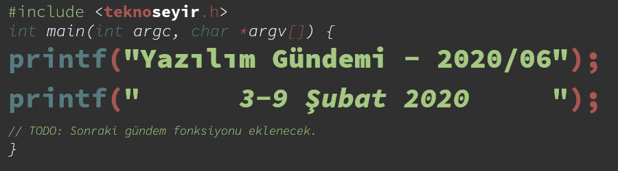
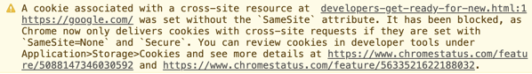
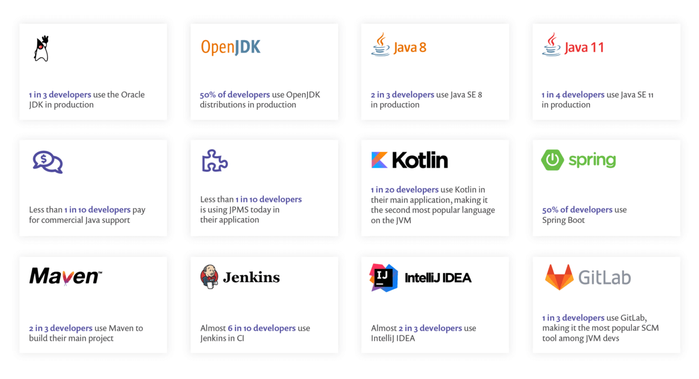
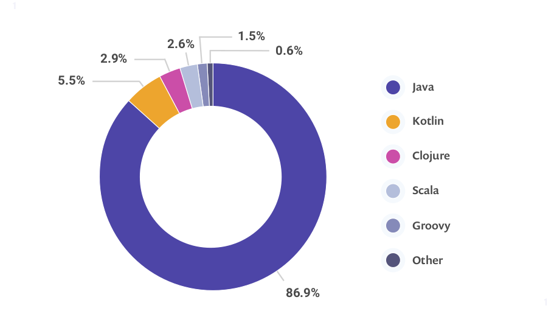
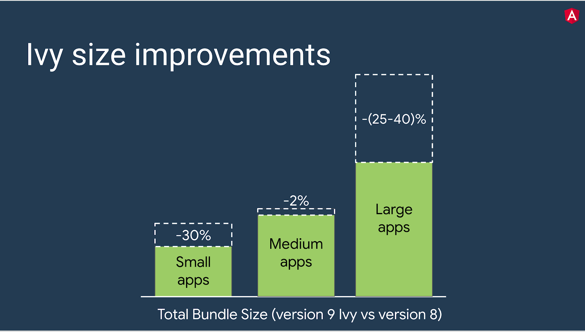
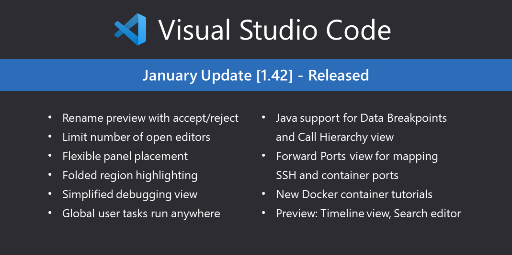

Yazılım Gündemi - 2020/06
3-9 Şubat 2020
İçindekiler
- 1. Google Chrome tarayıcısının SameSite Cookie değişiklikleri bu ay devreye giriyor
- 2. JVM Ekosistem Raporu 2020 yayınlandı.
- 3. TypeScript 3.8 RC sürümü yayınlandı
- 4. Angular 9 sürümü yayınlandı
- 5. Swift 5.2 sürümü yayınlandı
- 6. GNU ve Özgür Yazılım Vakfı (FSF) birlikte çalışmaya devam edecek
- 7. Visual Studio v1.42 (Ocak 2020) sürümü yayınlandı
- 8. Yaklaşan Etkinlikler
- 9. Diğer Haberler
- 10. Lisans

< Önceki Gündem | 3-9 Şubat 2020 | Sonraki Gündem >
1 Google Chrome tarayıcısının SameSite Cookie değişiklikleri bu ay devreye giriyor
Bir fikr-i takip haberi yapalım. Bu konudan Yazılım Gündemi - 15 yazısında
bahsetmiştik. Bu nedenle değişiklikle ilgili detaylı bilgi edinmek isterseniz
o yazıya bakabilirsiniz ama şöyle kısa bir bilgi de verelim. 4 Şubat tarihinde
yayınlanan Chrome 80 sürümü ile hayatımıza giren SameSite Cookie özelliği,
sitelerde bulunan üçüncü parti çerezlerin SameSite=None;Secure ifadesi ile
işaretlenmesi gerekliliğini getiriyor. Bu özellik sayesinde çerezler güvenli
bağlantılar arasında işlenebilecek. Tarayıcınızın bu özelliği destekleyip
desteklemediğine bu sayfadan bakabilirsiniz. Sayfadaki her şeyin yeşil olması
gerekiyor.
Eğer sitenizde bir çerez üçüncü parti olduğu halde yukarıdaki gibi işaretlenmemişse Chrome 80 sürümünün Geliştirici Araçları konsol ekranında aşağıdaki gibi bir uyarı ile karşılaşacaksınız.

Bu durumda sizin yapacağınız pek bir şey yok gibi gözüküyor, sayfanıza eklediğiniz servisin ilgili değişiklikleri yapmasını bekleyeceksiniz ama eğer siz böyle bir servis sunuyorsanız o zaman şu yazıyı okumanızda fayda var. Fakat bazı servisler geriye uyumluluk olması açısından aynı çerezden iki tane kullanabilir, yani birisi eski, diğeri yeni ayarlarda iki çerez yukarıdaki uyarı bunlardan birisi için de gözükebilir, nitekim Google'ın bazı servislerinde de durum böyle olabilecekmiş.
Daha detaylı bilgi ve ileri okuma kaynakları için konu başlığına eklediğim bağlantıyı inceleyebilirsiniz.
2 JVM Ekosistem Raporu 2020 yayınlandı.

Şekil 3: Anket sonuçlarının özeti
Snyk isimli firmanın düzenlemiş olduğu JVM (Java Virtual Machine) ekosistemi anketinin sonuçları bu hafta içerisinde yayınlandı. Yukarıdaki görselde gördüğünüz özetin tam halini incelemek için bu adresteki PDF dosyasını inceleyebilirsiniz.

Şekil 4: JVM üzerinde çalışan diller arasında Kotlin yükselişte.
3 TypeScript 3.8 RC sürümü yayınlandı
Geçtiğimiz haftalardaki yazılım gündemi yazısında (bkz: Yazılım Gündemi - 2020/02) Beta sürümünün yayınlandığını duyurduğum TypeScript dilinin bu hafta Relase Candidate sürümü yayınlandı. Bu sürümle birlikte gelen "Private Fields" özelliğine o yazına değinmiştim. Diğer özellikleri de inceledim fakat aktif olarak kullandığım bir dil olmadığı için pek bir şey anladığımı söyleyemeyeceğim. Bu nedenle ilgili arkadaşları konu başlığına eklediğim bağlantıyı okumaya davet etmekten başka yapabileceğim bir şey yok. Bir sonraki sürümde dersime çalışmayı deneyeceğim :)
4 Angular 9 sürümü yayınlandı
VueJS ve ReactJS gibi kütüphanelerin çıkmasıyla birlikte her ne kadar popülerliği azalmış olsa da kurumsal camiada hala daha kullanılmaya devam edilen Angular kütüphanesinin bu hafta içerisinde 9.0.0 sürümü yayınlandı. Front-End tarafına çok uzak biri sayılmam aslında ama bir projede Angular kullanmayalı bayağı uzun zaman oluyor o yüzden pek fazla detaylara inemeyeceğim.
Bu sürüm, Ivy ismini verdikleri derleme ve çalışma zamanında render yapma kısımlarında çalışan bir "derleyici" ile birlikte geliyor ve Angular takımının iddiasına göre şunları sunuyormuş:
- Daha küçük paket boyutları.
- Daha hızlı test.
- Daha iyi debugging.
- CSS class ve style tanımlamaları iyileştirilmiş.
- Tip kontrolü iyileştirilmiş.
- Derleme hataları ve derleme zamanı iyileştirilmiş.
- Çoklu dil desteği iyileştirilmiş.

Şekil 5: Uygulama boyutlarına göre Angular 9'un küçülme oranları.
Yukarıdaki grafikte görebileceğiniz üzere Ivy isimli "derleyici" ile birlikte uygulamanızın boyutlarına göre dikkate değer bir paket boyutu azalması söz konusu. Bu da demek oluyor ki artık uygulamalarınız hem daha az yer kaplayacak, hem de kullanılmayan gereksiz komponentler atıldığı için daha hızlı yüklenme sürelerine sahip olacaksınız. Angular'ın genelde çok büyük paket boyutundan dolayı pek fazla tercih edilmediği düşünüldüğünde bu gelişme iyi bir adım diyebiliriz ama VueJS ve ReactJS kullananları kendine çekebilir mi bilinmez.
Bu sürüme yükseltmek için aşağıdaki komutları kullanabilirsiniz ama öncesinde şu sayfadaki Angular Güncelleme Rehberi'ni okumanızı şiddetle tavsiye ederim: https://update.angular.io/
$ ng update @angular/cli @angular/core
5 Swift 5.2 sürümü yayınlandı
Apple tarafından geliştirilen ve çoğunlukla yine Apple ekosistemindeki cihazlar için uygulama geliştirmek için kullanılan programlama dili Swift'in 5.2 sürümü bu hafta içerisinde yayınlandı. Mobil uygulama geliştirme tarafına çok uzak birisi olsam da blog yazılarındaki kodları ve yapıları kolayca anlayabildim. O halde gelin bir özelliği birlikte inceleyelim:
5.1 Key Path Expressions as Functions (SE-0249)
Hemen her programlama dilinde bulunan, dizi içerisinde çeşitli işlemler
yapılabilen map, filter gibi fonksiyonlar Swift dilinde de var fakat
bu sürümde bir kolaylık geldi. Örnek üzerinden anlatmak gerekirse:
Diyelim bu şekilde bir struct tanımınız var:
struct Kullanici { let isim: String let yas: Int var oyKullanabilirMi: Bool { yas >= 18 } }
ve bu şekilde objelerimiz olsun:
let eren = Kullanici(isim: "Eren Hatırnaz", yas: 25) let ahmet = Kullanici(isim: "Ahmet Mehmetoğlu", yas: 17) let mehmet = Kullanici(isim: "Mehmet Ahmetoğlu", yas: 18) let kullanicilar = [eren, ahmet, mehmet]
ve bu kullanicilar dizisindeki elemanların isimlerini getirmemiz gerekir.
Eskiden bu şekilde yapıyorduk:
let eski_kullaniciAdlari = kullanicilar.map { $0.isim }
Artık bu şekilde kullanabiliyoruz:
let kullaniciAdlari = kullanicilar.map(\.isim) print(kullaniciAdlari)
Aynı şekilde filter ve diğer fonksiyonlar için de bu şekilde kullanmak
mümkün:
let oyKullanabilenler = kullanicilar.filter(\.oyKullanabilirMi)
Bu arada ilk defa gördüğüm için söylemeden edemeyeceğim. Swift'in söz dizimi
gerçekten güzelmiş. Özellike bu oyKullanabilirMi özelliğini tanımlarken
kullandığım yas değeri 18'den büyükse True olsun anlamına gelen söz dizimi
gerçekten çok zekice.
Bu sürüm ile birlikte dile başka birçok özellik daha eklendi fakat hepsine değinirsem yazı çok uzayacak. Bu nedenle ilgili arkadaşları konu başlığına eklediğim bağlantıya tıklamaya davet ediyorum.
Ayrıca bu hafta başında Swift takımı Swift Crypto isimli yeni bir açık kaynak proje de duyurdu. GitHub deposu
6 GNU ve Özgür Yazılım Vakfı (FSF) birlikte çalışmaya devam edecek
Richard Stallman'ın olayından (bkz: Yazılım Gündemi - 10) sonra GNU oluşumu ile Free Software Foundation arasındaki ilişkiler de tartışmalı duruma gelmişti (bkz: Yazılım Gündemi - 13). Bu hafta iki tarafında kendi sitelerine ekledikleri sayfadaki (GNU, FSF) yazı ile birlikte bu olaylar biraz çözülmüş gibi gözüküyor. Her ne kadar iletişimlerini minimum seviyeye indirmek istediklerini belirtseler de birlikte çalışmaya devam edeceklermiş. Yine de konuyla ilgili fikir belirtmek isteyenlerin 13 Şubat tarihine kadar süresi varmış.
7 Visual Studio v1.42 (Ocak 2020) sürümü yayınlandı

8 Yaklaşan Etkinlikler
| Etkinlik İsmi | Yeri | Tarihi |
|---|---|---|
| Elasticsearch: Sizing and Capacity Planning | İstanbul | 12 Şubat 19:00 |
| Mikroservis Ortamında Yapay Zeka Uygulaması oluşturma | Online | 13 Şubat 13:00 |
| OpenShift 4: Operatörler ile Bulutunuzu Yönetin | İstanbul | 13 Şubat 19:00 |
| Azure Serverless Architecture | İstanbul | 17 Şubat 19:00 |
| Firebase Study Jam | İzmir | 18 Şubat 18:00 |
| Power BI : Verileriniz Sizinle Konuşmaya Başlasın | İstanbul | 18 Şubat 19:00 |
| 1. Bilişim Zirvesi | İstanbul | 19 Şubat 10:00 |
| PostgreSQL'de İleri Seviye Yedekleme | İstanbul | 19 Şubat 18:00 |
| TRAI Meet-Up 31 Otomotiv ve Yapay Zeka | İstanbul | 19 Şubat 18:00 |
| GraphQL 101 Workshop - El Housseine Jaafari | İstanbul | 19 Şubat 18:30 |
| Her şeyi yapan sihirli servis : Elastic Beanstalk - Level 100 | İstanbul | 19 Şubat 19:00 |
| Bilgisayar Mühendisliği Öğrencileri Kongresi | İstanbul | 20 Şubat 09:00 |
| PostgreSQL'de ileri seviye kurulum, güncelleme ve bakım teknikleri | Ankara | 20 Şubat 18:30 |
| Big Dataya Giriş: NoSQL & Spark | İstanbul | 21 Şubat 10:00 |
| Women Techmakers Series 2 | Ankara | 22 Şubat 11:00 |
9 Diğer Haberler
- Microsoft Teams, geçici olarak çöktü ve gün içerisinde tekrar açıldı.
- Facebook AI, PyTorch3D kütüphanesini tanıttı. GitHub Deposu
- Facebook AI, NLP çalışmaları için veri seti yayınladı: CCMatrix.
- Microsoft'un Jupyter Notebook alternatifi .NET Interactive, Preview 2 sürümünü yayınladı.
- JetBrains, birçok IDE'sinin 2020.1 Erken Erişim sürümünü yayınladı:
- JetBrains, KotlinConf 2019 etkinliğinin materyallerini sitesine yükledi.
- Rust, "Cleanup Crew" takımı oluşturacağını duyurdu. Katılımlar başladı.
- JDK 14 Release Candidate oldu.
- DConf 2020 için konuşmacı başvuruları başladı. Son gün 12 Nisan.
- PHPUnit kütüphanesinin v9 sürümü yayınlandı.
- KDevelop 5.5 sürümü yayınlandı.
- imgaug kütüphanesinin v0.4.0 sürümü yayınlandı.
- PHP için Markdown dosyası işleme kütüphanesi CommonMark 1.3.0 sürümünü duyurdu.
10 Lisans

Yazılım Gündemi - 2020/06 yazısı Eren Hatırnaz tarafından Creative Commons Atıf-GayriTicari-AynıLisanslaPaylaş 4.0 Uluslararası Lisansı (CC BY-NC-SA 4.0) ile lisanslanmıştır.